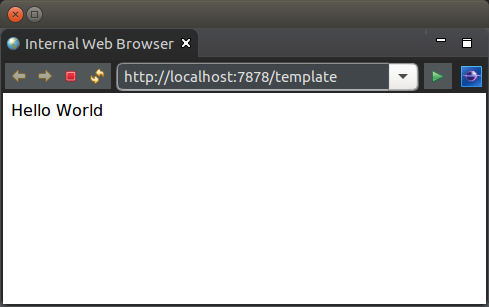

This tutorial demonstrates the dependency injection of a Plain Old Java Object (POJO).
The example used in this tutorial is the following simple application to render a message to screen. Part of the message is obtained from a dependency injected POJO.
The following is the content of the template.
<html>
<body>
<p>Hello ${audience}</p>
</body>
</html>
With the template logic.
public class TemplateLogic {
public Pojo getTemplateData(Pojo dependency) {
return dependency;
}
}
WoOF (via its underlying OfficeFloor framework) injects dependencies into methods. By injecting dependencies into methods, WoOF makes development of applications simpler. This is because the application logic is written as loosely coupled methods rather than highly coupled objects. See Inversion of Coupling Control for more details.
The injected dependency (POJO) will provide the remaining text of the rendered content. The code of the injected POJO is as follows.
public class Pojo {
public String getAudience() {
return "World";
}
}
While templates, first-class procedures and other continuous integration aspects inject into methods. The injected objects themselves may also have dependencies.
Injection into objects can be done by the following various means.
public class FieldInjectedPojo {
private @Dependency Pojo pojo;
public String getAudience() {
return this.pojo.getAudience();
}
}
public class SetterInjectedPojo {
private Pojo pojo;
@Dependency
public void setPojo(Pojo pojo) {
this.pojo = pojo;
}
public String getAudience() {
return this.pojo.getAudience();
}
}
public class ConstructorInjectedPojo {
private final Pojo pojo;
public ConstructorInjectedPojo(Pojo pojo) {
this.pojo = pojo;
}
public String getAudience() {
return this.pojo.getAudience();
}
}
Should there be more than one constructor, the constructor to use for dependency injection can be specified by adding a @Dependency annotation.
Objects for dependency injection are configured in the application.objects file contained at the root of the class path. Providing this file is optional, as it is anticipated that WoOF annotations will provide most POJO dependency configuration. However, it is supported to extend WoOF applications with additional dependencies as required.
Note that OfficeFloor does not do class path scanning. While this is convenient, any decent sized application will be slow to start. This makes class path scanning not appropriate for scale to zero applications due to slow start up times. Hence, OfficeFloor avoids class path scanning.
The configuration of dependency injecting the POJO is as follows.
<objects> <managed-object class="net.officefloor.tutorial.dipojohttpserver.Pojo" /> <managed-object class="net.officefloor.tutorial.dipojohttpserver.field.FieldInjectedPojo" /> <managed-object class="net.officefloor.tutorial.dipojohttpserver.setter.SetterInjectedPojo" /> <managed-object class="net.officefloor.tutorial.dipojohttpserver.constructor.ConstructorInjectedPojo" /> </objects>
The configuration above instantiates the POJOs. Should more complex logic be required, please see the tutorial on managed object source.
WoOF auto-wires dependency injection based on type. Auto-wiring dependencies based on type is adequate (and much easier) for the majority of applications. WoOF's underlying OfficeFloor framework does provide manual dependency configuration, however this is seldom used as WoOF allows qualifying dependencies for auto-wiring.
The unit test ensures the correct rendered content is received.
@RegisterExtension
public final MockWoofServerExtension server = new MockWoofServerExtension();
@Test
public void injectIntoTest(Pojo testInjectedPojo) {
assertEquals("World", testInjectedPojo.getAudience(), "Dependency inject into test");
}
@Test
public void ensureRenderPage() throws Exception {
// Obtain the page
MockHttpResponse response = this.server.send(MockHttpServer.mockRequest("/template"));
assertEquals(200, response.getStatus().getStatusCode(), "Should be successful");
// Ensure page contains correct rendered content
String page = response.getEntity(null);
assertTrue(page.contains("Hello World"), "Ensure correct page content");
}
JUnit 4 example:
@Rule
public final MockWoofServerRule server = new MockWoofServerRule(this);
private @Dependency Pojo testInjectedPojo;
@Test
public void injectIntoTest() {
assertEquals("Dependency inject into test", "World", this.testInjectedPojo.getAudience());
}
@Test
public void ensureRenderPage() throws Exception {
// Obtain the page
MockHttpResponse response = this.server.send(MockHttpServer.mockRequest("/template"));
assertEquals("Should be successful", 200, response.getStatus().getStatusCode());
// Ensure page contains correct rendered content
String page = response.getEntity(null);
assertTrue("Ensure correct page content", page.contains("Hello World"));
}
The next tutorial covers thread injection.